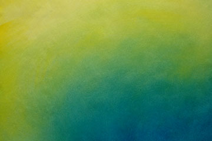

Zoek uit wat transitions zijn en beschrijf met eigen woorden wat het betekent.
Antwoord. Transitions zijn wat het gebeurt tussen A en B, als we van A naar B een overgaan willen doen. Van Blauw tot Geel zullen we de kleuren die tussen blauw en Geel zitten zien.
